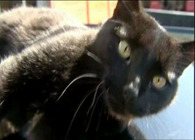
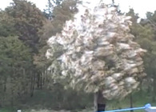

- Martedì 19 aprile 2011 – Aggiornato alle 20.36
Lassini, lettera a Napolitano
"Rinuncio alla campagna elettorale"
Moratti: "Via dalla lista". La Lega con il Colle
Il sindaco chiude all'autore dei poster magistrati-Br (audio) che si difende "Ho ripreso frasi premier". Poi il passo indietro. Stop anche dal Pdl
Sora Cesira: "New Law, new Law" Lassini non può di M. BRACCONI
Arrigoni, due morti in blitz Hamas
Il "giordano" si è fatto esplodere
Foto La camera ardente per Vik al Cairo
Irruzione della polizia palestinese in un campo profughi. Ucciso uno dei presunti membri del commando che ha assassinato il volontario italiano. L'altro, considerato la "mente" dell'azione, si è suicidato. Catturato un terzo salafita
Nucleare, il governo fa retromarcia
Abrogate norme, stop referendum
"Giustizia e acqua, trucco anti quorum"
Cancellato prima del via il programma di ritorno all'atomo: Palazzo Chigi inserisce, nella moratoria già prevista nel decreto legge omnibus, l'abrogazione delle norme per la realizzazione degli impianti di V. GUALERZI
BLOG Ko tecnico, formula ambigua di A.CIANCIULLO - Scheda referendum
-
LA SITUAZIONE
La "mina" di Milano
e l'altolà della Lega - Continua
- I POTERI
-
-
Il Monsignore
Beatificazione Wojtyla, paura del flop -
Toghe
La voce di Fini e Napolitano
-
Il Monsignore
- Edizione elettronica
-
Denominazione Ultimo Var %
-
- Segui Repubblica
- Repubblica Mobile
- iPhone
- Sms
- Podcast
- Rss
- FriendFeed
- Archivio
- Ultimo Minuto
- Extra
- Quotidiano Elettronico
- iPad
- Servizio Clienti
- Web Slice
-
- Iniziative editoriali
-
- Tutte le iniziative editoriali
- Saviano, i dieci motivi
- Italia, i 150 anni
- Apocalisse in Giappone
- Per la scuola pubblica e la Costituzione
- Sanremo 2011
- Le vittime italiane in Afghanistan
- Addio a Enzo Bearzot
- La rivolta di scuole e università
- Il dossier Wikileaks
- Monumenti da salvare
- Cinema Roma 2010
- USA: elezioni di mid-term
- Italiani all'estero
Giustizia, Napolitano argine agli attacchi
Solo dopo l'intervento del Quirinale il Pdl e il presidente del Senato si decidono a prendere le distanze dai manifesti anti pm. Scoprite il giornale che troverete in edicola di GIANLUCA LUZI
Maxi sbarco a Lampedusa - Video
arrivati ottocento migranti
Le immagini: nella tendopoli di Trapani
Dopo quattro giorni di tregua, i barconi tornano a solcare il Canale di Sicilia: prima 50 profughi sbarcano sull'isola, poi arriva un grande natante con persone stipate anche nelle stive
BLOG L'Europa per lorodi R. STAGLIANO'
In piazza, sugli autobus, sui tetti
la protesta "action" degli studenti
 I ragazzi oggi in piazza, fra cortei, flash mob, sit-in in oltre cinquanta città italiane. Per difendere la propria condizione contro "un governo che non fa altro che tagliarci il futuro". E in preparazione dello sciopero generale del 6 maggio di CARMINE SAVIANO
I ragazzi oggi in piazza, fra cortei, flash mob, sit-in in oltre cinquanta città italiane. Per difendere la propria condizione contro "un governo che non fa altro che tagliarci il futuro". E in preparazione dello sciopero generale del 6 maggio di CARMINE SAVIANO
Volantino shock dei tassisti dell'Ugl
"L'assessore rischia la sorte di Biagi"
Milano, il testo era stato affisso a Linate dopo che il responsabile dei Trasporti del Pirellone, Cattaneo, aveva abbandonato la trattativa sugli aumenti. Poi il sindacato si scusa
Cina, monito agli Usa dopo S&P
E Obama parla di sacrifici
Le Borse europee riprendono fiato
Pechino è il primo detentore di titoli del Tesoro Usa. Governo: "Speriamo di proteggere gli investitori". Ieri l'agenzia di rating aveva abbassato da 'stabili' a 'negative' le prospettive sulle emissioni sovrane di GIULIANO BALESTRIERI
BLOG Il tetto che preoccupa i mercati di FEDERICO RAMPINI
Libia, in Italia il leader dei ribelli
"I raid non bastano per proteggerci"
Emergency: i cecchini sparano sui bambini - foto
Jalil incontrerà Napolitano e Berlusconi: "I lealisti hanno fatto 10 mila morti e 50 mila feriti". Il ministro degli Esteri: "L'unica via d'uscita è che il Colonnello lasci il potere". Drammatica testimonianza da Misurata / VIDEO
Usa, a 6 anni a scuola con la pistola
partono i colpi, ferite tre persone
FOTO Tragedia sfiorata alla Ross Elementary School di Huston. L'arma è scivolata fuori dallo zaino del piccolo e cadendo ha fatto partire alcuni colpi. In ospedale tre ragazzini, con ferite lievi
Borsellino, arrestato un altro killer
L'Espresso/ Fermato a Palermo Fabio Tranchina, accusato per la strage di via D'Amelio e uomo chiave dei rapporti tra i fratelli Graviano e la politica di LIRIO ABBATE
Vi racconto quando il cuore si ferma
BUSSOLE Il dolore, l'ospedale, l'intervento. E la possibilità di restare solo. Con una certezza: l'indifferenza nei confronti degli altri che abitano davanti a noi mi sembra oscena di ILVO DIAMANTI
Tremonti: Ue assente nelle crisi
"Considerare revisione trattati"
Audizione del ministro dell'Economia all'Europarlamento: "L'Unione si basa su documenti ideati prima della globalizzazione. I problemi geopolitici ed economici possono essere lo spunto per una discontinuità e scrivere un nuovo patto"
Confindustria gela il governo
"Deludenti le misure di crescita"
Il dg Galli, giudica positivo il "risanamento dei conti ma - aggiunge - serve uno scatto di orgoglio per le urgenze del Paese". Negativa la valutazione del piano per le riforme: "lo sforzo indicato è estremamente ambizioso, impegno superiore a quello per Maastricht" / Commenta
Mettiamo sul web la spesa pubblica
Un enorme database a disposizione dei cittadini, anche sul nostro sito. A Roma un convegno fa il punto sui ritardi dell'Italia sugli Open Data di PASQUALE NOTARGIACOMO
- Repubblica TV
- Roma, farmacisti reagiscono a rapina: arrestati i ladri
- NZ: l'avventura di Douglas, si imbarca su un cargo
- Non scuotere l'albero: la nuvola è di polline
- La classe non passa: Montella, stop e palleggi di tacco
Marchionne, nuovo attacco alla Fiom
E su Bertone avverte: "Pronti a trasferirla"
Ma per la Fiat è profondo rosso nelle vendite in Europa
Dopo la pausa di febbraio, a marzo il mercato auto torna negativo. L'ad dopo l'incontro con i sindacati: "I ricorsi possono compromettere Fabbrica Italia". E per lo stabilimento chiede una approvazione in tempi rapidi del piano industriale di PAOLO GRISERI
BLOG Come delocalizza la GM di VITTORIO LONGHI
Beatificazione Wojtyla, paura del flop
Timori in Vaticano sui numeri della partecipazione alla sacra cerimonia del primo maggio. Prenotazioni cancellate, il Concertone. E anche i romani scappano... di MONSIGNORE
Foto: eutanasia, manifesti shock dei radicali
Sono spuntati a Milano: 13 metri per 6. In primo piano c'è il volto di un uomo malato terminale che chiede "di essere lasciato morire in pace". E' la campagna dell'Associazione Luca Coscioni per il 5 per mille che fa già discutere
Terrorismo, torna libero Concutelli
Il figlio di Occorsio: pietà, ma siamo sconcertati / Audio
Scarcerato il leader di Ordine Nuovo condannato per l'omicidio nel '76 del sostituto procuratore che indagava sul gruppo neofascista. Gli è stata riconosciuta la sospensione per motivi di salute
Cuba, svolta "cinese": sì a investimenti esteri
Fidel esce dal Cc, Raul segretario
VIDEO Lungo applauso per il lìder maximo
Il IV Congresso approva il piano di riforme proposto dal nuovo leader: "Il socialismo va aggiornato, la pianificazione terrà conto delle tendenze di mercato"
Siria, revocato lo stato d'emergenza
Ma a Homs la polizia spara sulla folla
L'annuncio storico rappresenta un'apertura di rilievo, ma sul terreno la repressione continua. Disperso con la forza sit-in nella città del centro del Paese, quattro i morti. E le autorità annunciano: "Non tollereremo più alcuna manifestazione"
Fukushima, robot nei reattori
trovate barre parzialmente fuse
La conferma dei danni dopo la prima ricognizione dei due robot inviati dagli Usa per misurare la radioattività degli ambienti. Si teme anche per il reattore 2, comincia l'espulsione delle 60mila tonnellate di acqua riversata per il raffreddamento
Incendio alla Sagrada Familia - Foto
1500 evacuati, preso piromane - Video
Barcellona, uno squilibrato ha dato fuoco ad abiti talari e paramenti sacri nella sagrestia della basilica. E' stato bloccato dai turisti che stavano visitando la chiesa insieme a lui
Basta con la rete lenta e i blocchi a Skype
Bruxelles bacchetta le telecom europee
Portabilità in 24 ore, velocità verificate e non ipotetiche, no allo stop arbitrario dei servizi VOIP dagli operatori mobili: l'Ue richiama alla neutralità e alla massima trasparenza. Per gli utenti. E minaccia, se non ascoltata, di essere ancora più dura
Cogne bis la Franzoni condannata per calunnia
La donna, che deve scontare una pena di 16 anni per aver ucciso il figlio Samuele, ritenuta colpevole di aver accusato ingiustamente un vicino di casa. Condannata a un anno e quattro mesi
Apple contro Samsung: "Copiati iPhone e iPad"
Per Cupertino, il gruppo sudcoreano con il Galaxy Tab avrebbe plagiato design, confezione e interfaccia utente. Apple ha in corso cause analoghe contro Nokia, Htc e Motorola
Fascino e stile, le star delle case reali - foto
Secondo un sondaggio inglese le tre principesse più belle dell'era moderna sono Grace Kelly, Rania di Giordania e Kate Middleton. Ma la lista di "belle del reame" è lunga di CLAUDIA MORGOGLIONE
Malattie o sesso, autogossip a Hollywood
Tra i divi è ormai una mania: parlare del proprio privato prima che lo facciano gli altri. Addio puritanesimo anni 50: le confessioni si fanno sul web di C. M.
Pasqua con "Judas" - video
l'ultima provocazione di Lady Gaga
 Pubblicato in anticipo sul web, il nuovo singolo della popstar avrebbe dovuto debuttare oggi, in piena Settimana Santa. Canta del suo innamoramento per Giuda. "Nessuna volontà di offendere la fede". Ma è allarme nel mondo cattolico, e non solo di PAOLO GALLORI
Pubblicato in anticipo sul web, il nuovo singolo della popstar avrebbe dovuto debuttare oggi, in piena Settimana Santa. Canta del suo innamoramento per Giuda. "Nessuna volontà di offendere la fede". Ma è allarme nel mondo cattolico, e non solo di PAOLO GALLORI
Roma-Inter
consolatevi
con la Coppa
LA DIRETTA In campo per l'andata della semifinale della Coppa Italia. Totti squalificato, Montella rilancia Borriello. Leonardo punta su milito e Pandev, si rivede Maicon
Ecco i superchef
vince un danese
Bottura 4° / Video
A Londra i "World's 50 Best": molti locali iberici, sei italiani e otto francesi. Vince Redzepi (foto). Il modenese sale in classifica, ma nel voto dei colleghi è il n.1 dall'inviato LICIA GRANELLO / La top ten
Le "pause"
che insegnano
a parlare
Studio Usa: le esitazioni dei genitori non distraggono ma segnalano che è in arrivo una nuova informazione, così attivano l'attenzione del bimbo di ALESSIA MANFREDI

-
- Opinioni
- Tempo Reale, Il Blog del Direttore
di Vittorio Zucconi -
- Rubriche
-
- Blog
-
- Controfagotto Aldo Lastella
- Destinazioni Dario Cresto-Dina
- Bloooog! Fabrizio Bocca
- Eco-logica Antonio Cianciullo
- Politica Pop Marco Bracconi
- Scene Digitali Vittorio Zambardino
- Percentualmente Rosaria Amato
- In un altro paese Alexander Stille
- Animal Mouse Cristina Nadotti
- 2050 Valerio Gualerzi
- PNR - presi nella rete Riccardo Staglianò
- Media-Trek Ernesto Assante
- Noi&Voi Guglielmo Pepe
- Fotocrazia Michele Smargiassi
- Manhattan Transfer Andrea Visconti
- BlogMotori Vincenzo Borgomeo
- Settimo Cielo Sandro Magister
- Post teatro Anna Bandettini
- Piccole grandi imprese Luca Pagni
- Ritagli Concetto Vecchio
- WWWomen Cinzia Sasso
- Il non-senso della vita Piergiorgio Odifreddi
- Rimbalzi Maurizio Crosetti
- Orient-tales Fabio Scuto
- Blog Trotter Leonardo Coen
- Bookowski Dario Olivero
- Europe Andrea Bonanni
- Diritti e rovesci Giampaolo Cadalanu
- Feluche Vincenzo Nigro
- Chiedimi Come Massimo Bucchi
-
-
Juventus
Marotta-Mancini: si parla
Il ds bianconero si è intrattenuto a colloquio con il procuratore del tecnico, Giorgio De Giorgis: "Abbiamo parlato di tutto". Mercato, contatti con il Liverpool per uno sconto sul centrocampista: "Quanto prima arriveremo ad una conclusione" di TIMOTHY ORMEZZANO
Trattativa per Aquilani
-
-
-
Serie A
Tensione a Bogliasco
Contestati giocatori e tecnico. Diverbio pesante tra l'allenatore e gli ultrà, le forze dell'ordine evitano la rissa. Sabato scorso le minacce di morte alla squadra, terz'ultima in classifica e a rischio retrocessione di MARCO LIGNANA
aggredito Cavasin
LA VOLATA SALVEZZA
-
-
-
Calcio
Barça-Real da brivido
Finale di Coppa del Re a Valencia. Vigilia agitata dalle provocazioni di Piquè e le reazioni rabbiose dei madrileni. E per lo Special One, dopo il pari di sabato scorso, è un nuovo appuntamento verità dall'inviato ANDREA SORRENTINO
Rischia soprattutto Mou
-
Napoli
De Sanctis si arrende
Il portiere azzurro pensa al secondo posto: "Ci mancano otto punti per blindarlo. La qualificazione diretta in Champions League è un risultato straordinario. Ora vogliamo fare bene a Palermo" di PASQUALE TINA
"Il Milan non si prende più" -
Moto
Biaggi: "Io e Valentino
Il pilota romano parla della sua rivalità con Rossi: "Per anni il nostro dualismo ha giovato a questo sport, ma gli attriti passano. Ora siamo un po' più maturi e riconosciamo il lavoro fatto dall'altro"
come Coppi e Bartali" -
Olimpiadi
Nel cuore di Londra
La sede della vetrina del "Made in Italy" scelta dal Coni per le prossime Olimpiadi sarà il "Queen Elizabeth II conference centre". Petrucci: "E per Roma tutto procede bene" di FULVIO BIANCHI
la nostra "Casa Italia"
LE FOTO
-
- Dalle sezioni
- pubblico »
- affari&finanza »
- esteri »
- cronaca »
- spettacoli&cultura »
- tecnologia »
- scienze »
- ambiente »
- scuola&giovani »
- persone »
- sport »
- casa&design »
-
Supplementi
Periodici
-
Giochi e Scommesse
-
Scuola e Formazione
Biblioteca di Repubblica
-
Servizi
- MAIL con Katamail
- Dizionario italiano
- Dizionario inglese/italiano
- Dove siamo nel mondo
- Calcola la tua pensione
Legale
Radio
-
Feed RSS